Chinese food isn't one cuisine — it's eight major regional traditions, thousands of years of imperial innovation, and street vendors who have been perfecting the same dish for three generations.
Regional Cuisines
The Map of Chinese Food
Each province has a distinct flavor profile — driven by climate, geography, and a history of imperial banquets. Learn these regional styles and you'll understand most of what hits your table.
Tap a shaded region or a dish pin on the map — then swipe left or right, or use the arrows, to browse every regional cuisine and classic dish.
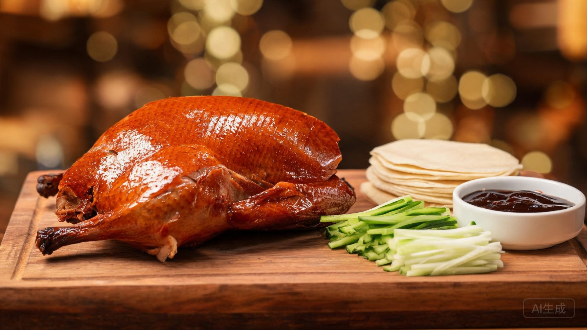
Peking duck — crisp skin, carved at the table
One of the Eight Great Cuisines — PEKING
Beijing (Jing Cuisine)
Imperial cuisine at its most refined. Rich, slightly sweet, and presentation-obsessed. Peking duck, scallion pancakes, zhájiàngmiàn noodles in soybean paste.
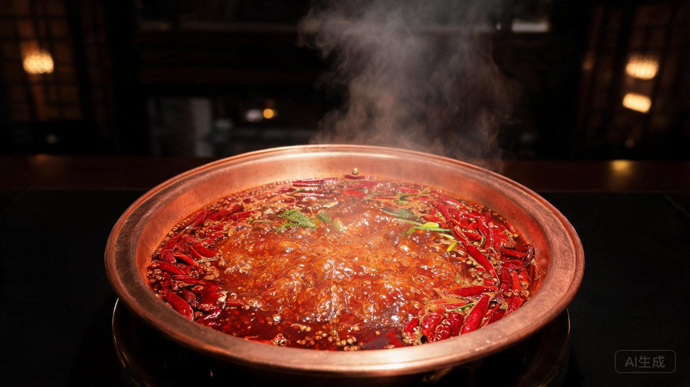
Sichuan hotpot — a boiling pot of málà broth
One of the Eight Great Cuisines — SICHUAN
Sichuan (Chuan Cuisine)
Fiery, numbing, complex. The málà (hot + numbing) flavor from Sichuan peppercorns is its signature. Hotpot, mapo tofu, kung pao chicken.
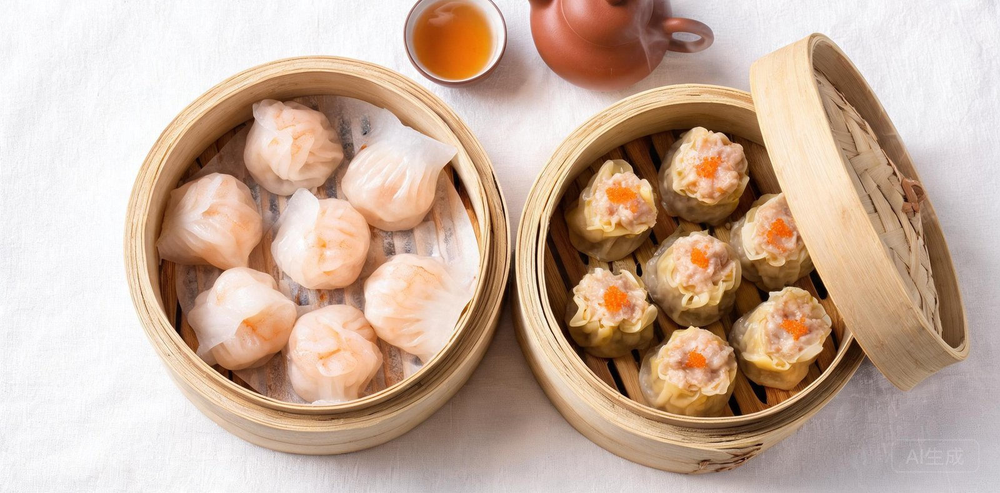
Dim sum — steamed baskets of small plates
One of the Eight Great Cuisines — CANTONESE
Cantonese (Yue Cuisine)
Dimsum, char siu, steamed fish. Cantonese chefs believe in letting ingredients shine — subtle, fresh, lightly seasoned. This is the food most Westerners first encounter.
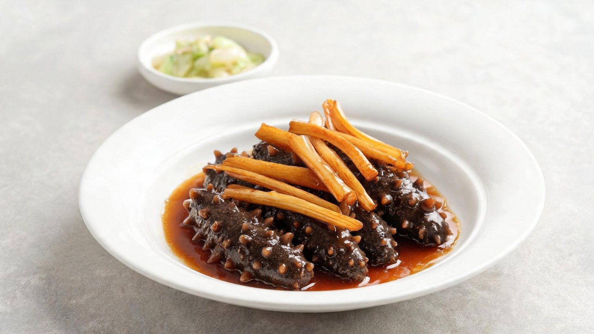
Braised sea cucumber with scallions
One of the Eight Great Cuisines — SHANDONG
Shandong (Lu Cuisine)
The oldest of the eight, origin of soy sauce and vinegar. Seafood-heavy from the Yellow Sea. Crispy fried dishes and hearty braises. Home of Confucius.
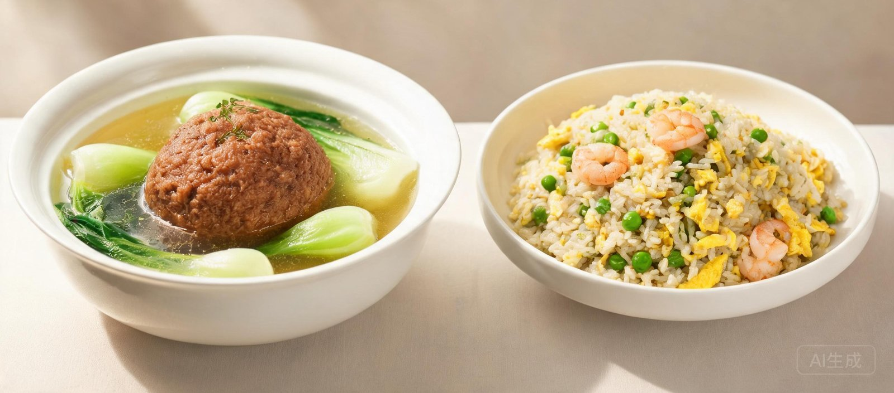
Lion's head meatballs and Yangzhou fried rice
One of the Eight Great Cuisines — JIANGSU
Jiangsu (Su Cuisine)
Jiangsu food is poetry on a plate — delicate soups, tiny pastries, and dishes like lion's head meatballs and Yangzhou fried rice. Suzhou and Nanjing lead the way.
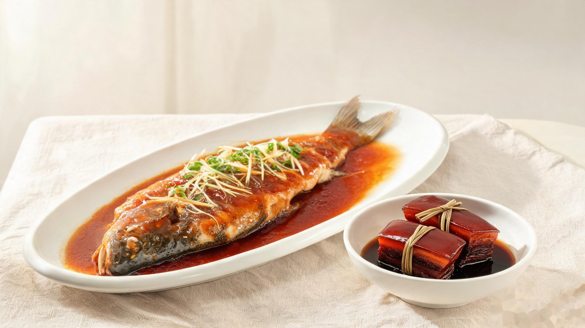
West Lake vinegar fish and braised pork
One of the Eight Great Cuisines — ZHEJIANG
Zhejiang (Zhe Cuisine)
Hangzhou's West Lake fish, sweet-and-sour ribs, and fresh bamboo shoots. Delicate, seasonal, and famous for its love of freshwater produce.
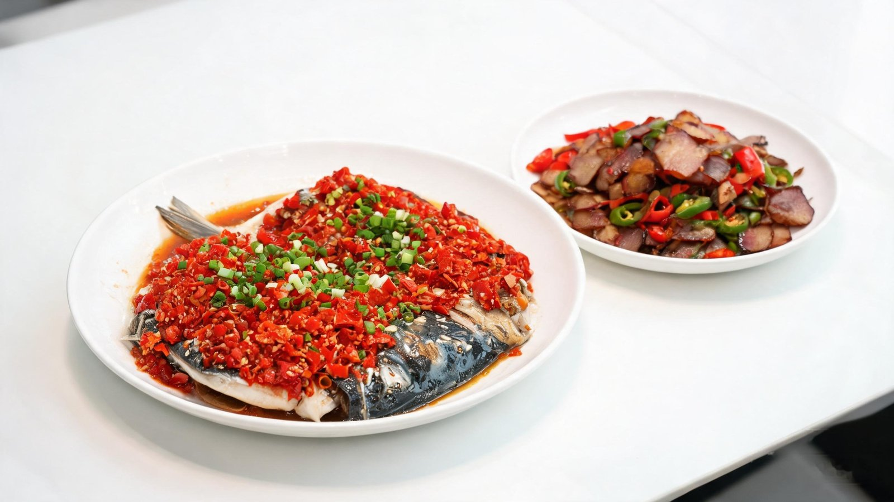
Chopped chili dishes, fiery and red
One of the Eight Great Cuisines — HUNAN
Hunan (Xiang Cuisine)
Spicy — but different from Sichuan. Hunan uses chili flakes and dried chilies rather than Sichuan peppercorns. Smoked meats, sour beans, Chairman Mao's favorite province.
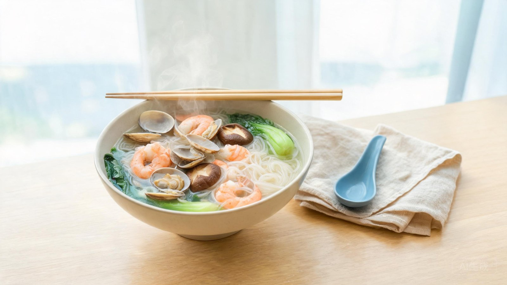
Fujian rice noodles and seafood soup
One of the Eight Great Cuisines — FUJIAN
Fujian (Min Cuisine)
Seafood masterpieces from the Taiwan Strait. Famous for its soups and fo tiao qiang (Buddha Jumps Over the Wall) — the most expensive dish in Chinese fine dining.
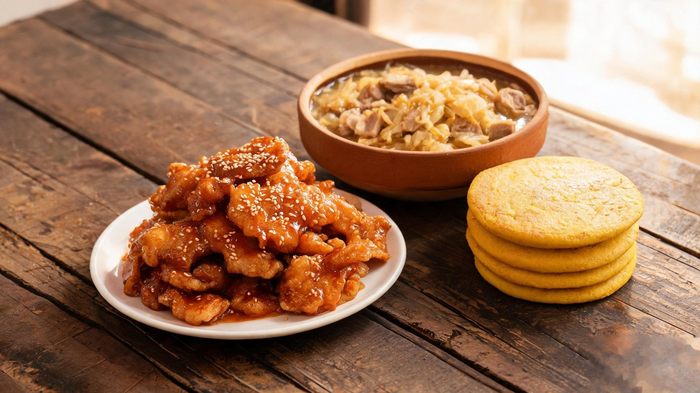
Sweet-and-sour pork and pickled cabbage stew
DONGBEI
Northeast China (Dongbei Cuisine)
Hearty, generous and built for winter. Dongbei cooking leans on pickled cabbage, potatoes, corn and deep-fried pork in a glossy sweet-and-sour sauce — and the portions are famously enormous.
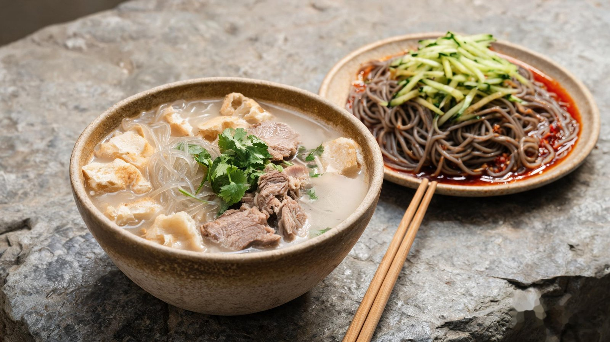
Lamb paomo and cold buckwheat noodles
SHAANXI
Shaanxi (Qin Cuisine)
Wheat country. Shaanxi runs on hand-pulled noodles, lamb soups and vinegar-sharp sauces — the roujiamo and yang rou pao mo that travellers queue for in Xi'an were born here.
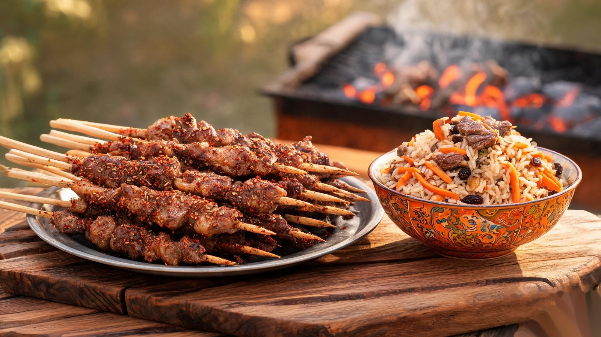
Cumin lamb skewers and Uyghur pilaf
XINJIANG
Xinjiang (Uyghur Cuisine)
China's Silk Road kitchen, and its most Central Asian: cumin-covered lamb skewers, hand-pulled laghman noodles, carrot-and-raisin pilaf, and naan baked against the wall of a clay oven.
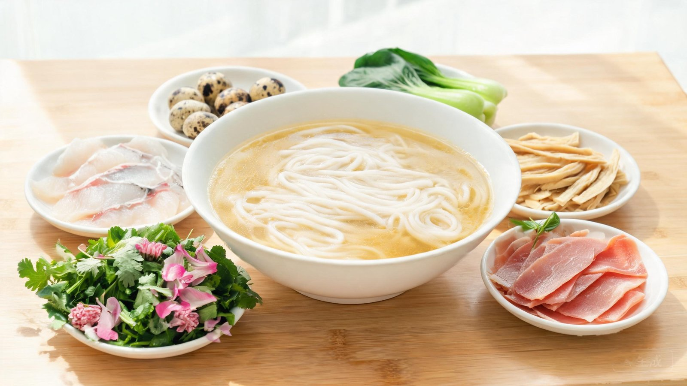
Crossing-the-Bridge rice noodles
YUNNAN
Yunnan (Dian Cuisine)
The most biodiverse plate in China: wild mushrooms, fresh herbs, edible flowers and rice noodles, cooked light and fragrant rather than heavy or hot.
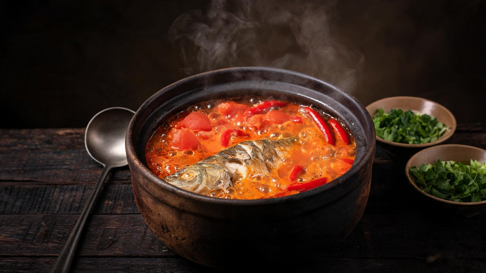
Sour fish soup, bubbling hot
GUIZHOU
Guizhou (Qian Cuisine)
Sour before hot. Guizhou ferments its flavours — tomato-and-chili sour soup, pickled vegetables and rice noodles — with a heat that bites differently from Sichuan's.
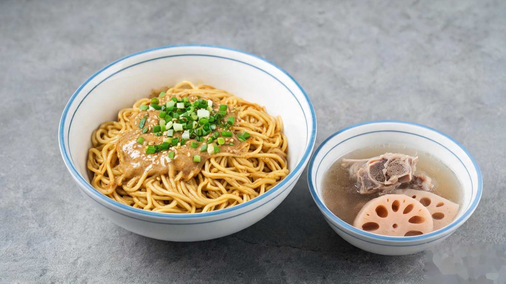
Wuhan hot dry noodles and lotus root soup
HUBEI
Hubei (E Cuisine)
“The province of a thousand lakes” eats freshwater fish, lotus root and pork-rib soup — and gave Wuhan its morning ritual: sesame-paste hot dry noodles.
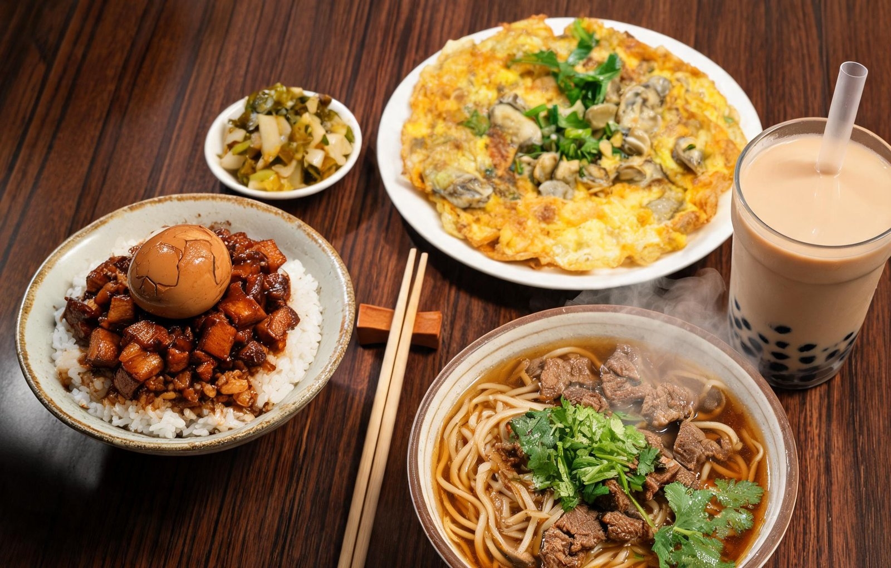
Taiwanese braised pork rice with a tea egg and pickled greens
TAIWAN
Taiwan (Taiwanese Cuisine)
Night-market food is the real Taiwanese cuisine: braised pork rice, oyster omelette, beef noodle soup and bubble tea — a warm, sweet-savoury style built from Fujian roots and island ingredients.
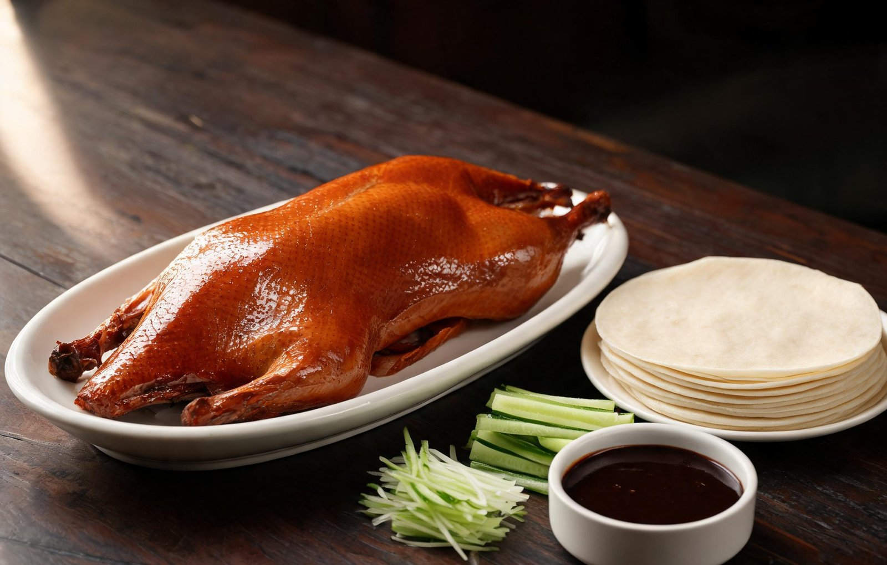
Peking duck, carved and served with thin pancakes, scallions, cucumber and sweet bean sauce
#1 — Peking Duck
Crisp Skin, 600 Years of Ceremony
The most famous Chinese dish in the world, and for good reason. A 2-kilogram duck is air-dried for 24 hours, glazed with sugar, and roasted hanging over fruitwood for an hour. The skin is crisp as glass, the meat moist and flavorful. It's carved table-side and eaten with scallions, cucumber, sweet bean sauce, and thin crepe wrappers.
Best in Beijing: Quanjude (the original 1864 restaurant) or Siji Minfu near Wangfujing.
Price range: ¥300–¥800 / duck. Book in advance.
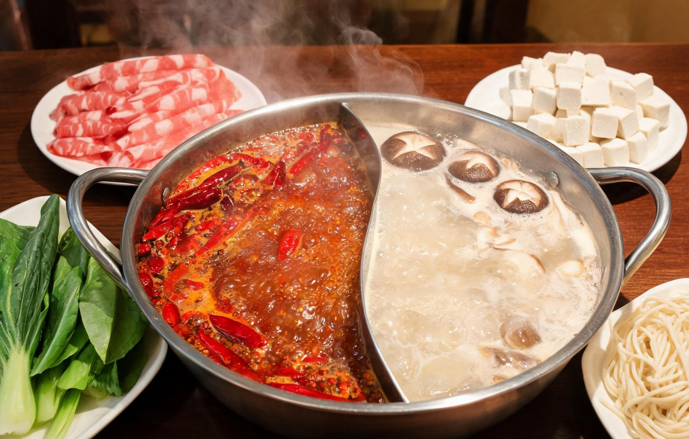
A bubbling Sichuan hotpot of red chili broth with plates of raw ingredients around it
#2 — Sichuan Hotpot
Communally Boiling, Individually Dipping
A massive pot of red, chili-oil broth sits at the center of your table. You order raw meat, vegetables, tofu, noodles, and offal — everything gets boiled at the table in seconds, then dipped in a garlic-sesame-soy sauce you mix yourself. Hotpot is the social activity in China — family gatherings, birthday dinners, business meetings, all happen around one.
Best in Chengdu: Xiaolongkan, Haidilao (the famous chain with robot waiters).
Broth choices: yuanyang guo (split pot, half spicy half mild) if you can't handle full fire.
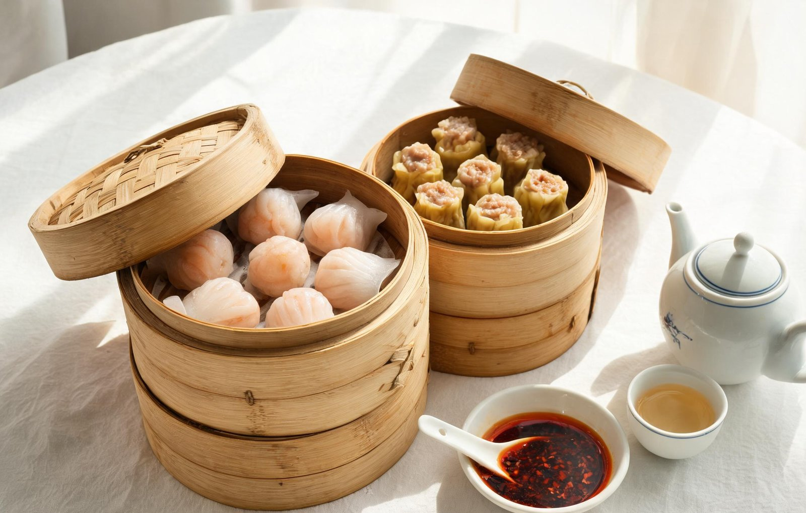
Bamboo steamers of Cantonese dim sum: shrimp dumplings, pork buns and rice rolls
#3 — Cantonese Dim Sum
Tea + Small Plates = The Weekend
In Guangzhou and Hong Kong, "going for dim sum" is a multi-hour tradition. Steamed baskets of shrimp dumplings (har gow), pork buns (char siu bao), chicken feet in black bean sauce, and congee — washed down with endless jasmine tea. Cart service is traditional, but modern restaurants use paper menus. Order a bit of everything.
Must-order: Har gow, siu mai, char siu bao, custard tarts, and rice noodle rolls (cheung fun).
Traditional etiquette: Tap two fingers on the table when someone pours your tea.
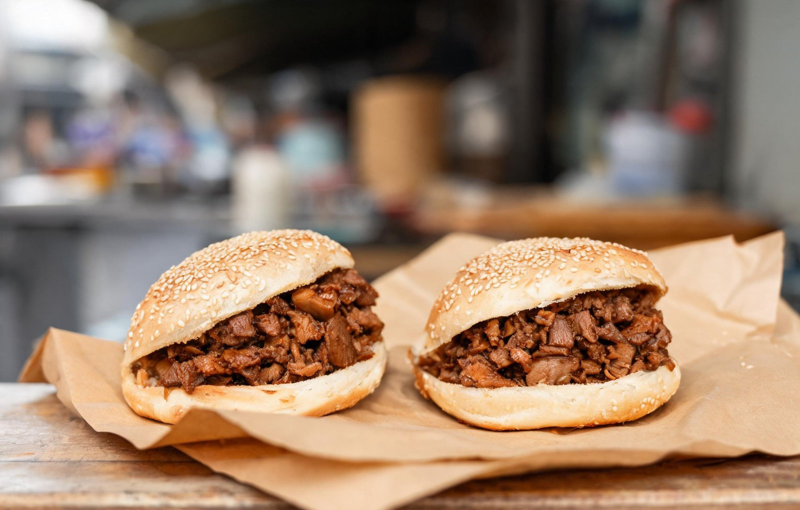
Roujiamo, braised pork chopped fine and stuffed into a crisp sesame bun
#4 — Roujiamo
The Original "Chinese Hamburger"
Also known as the hamburger of Xi'an, this is meat — usually slow-cooked braised pork or beef — chopped fine and stuffed inside a flat, crispy sesame bun. It's simple, cheap, and perfect. Best eaten standing up at a street stall in Xi'an's Muslim Quarter.
Price: ¥10–¥20 ($1.40–$2.80) — your cheapest great meal in China.
Pair with yang rou pao mo (lamb soup with broken bread) for the full Northern China experience.
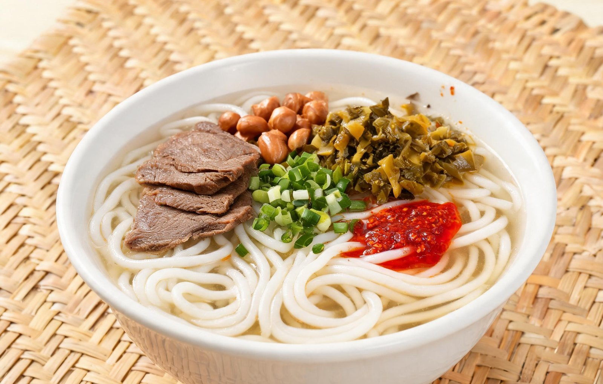
A bowl of Guilin rice noodles topped with peanuts, pickled vegetables and chili oil
#5 — Guilin Rice Noodles
Breakfast of Southwest China
Rice noodles in a clear, savory broth — that's the base. Guilin locals eat it every morning: they'll add pickled vegetables, fried peanuts, chili oil, and sometimes meat or fish. At any Guilin noodle shop, you'll see a hundred people slurping bowls down before 7am.
Look for signs that say mifen (rice noodles). In Guilin, every street has at least one.
Try it dry mix style if you prefer less broth.
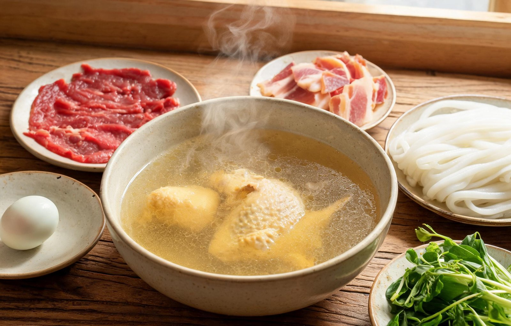
Crossing-the-Bridge noodles: boiling broth, raw side plates and a bowl of rice noodles
#6 — Crossing-the-Bridge Noodles
Yunnan's Magical Hot Bowl
A legend from Yunnan: a scholar's wife kept his noodle soup hot by placing it in a covered bowl, then walked across a bridge to deliver it. Today you get a bowl of boiling broth, a plate of raw meat, vegetables, and rice noodles — you dip everything in yourself and watch it cook. The soup is delicate and fragrant with herbs.
Best in Kunming: The small local shops with no English signs.
Yunnan is also famous for wild mushroom hotpot and flower cakes.
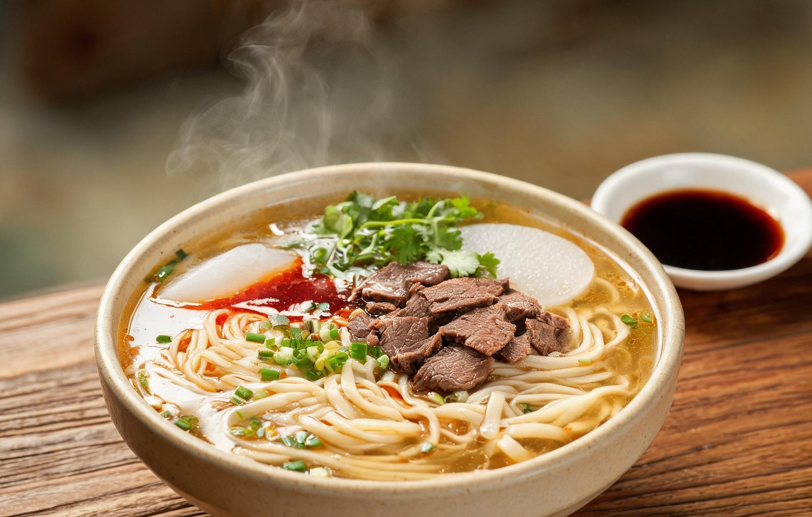
A bowl of Lanzhou beef noodles in clear broth, topped with radish, chili oil and coriander
#7 — Lanzhou Beef Noodles
Hand-Pulled Noodles, Straight from the Silk Road
Lanzhou sits on the old Silk Road in Gansu, and its beef noodles are now served in more Chinese cities than any other dish. The cook stretches one lump of dough into hundreds of threads in under a minute, then drops it into a clear beef-and-bone broth with radish, chili oil and coriander. You choose the width: thin, flat or wide.
Best in Lanzhou: the small halal noodle houses near the Yellow River, open from six in the morning.
Price: about ¥10 to ¥20 a bowl — and in Lanzhou the shops close when the day’s broth runs out.
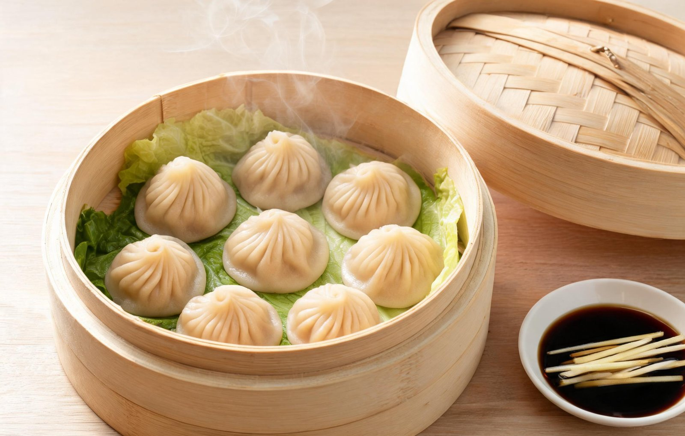
Steamed xiaolongbao soup dumplings in a bamboo basket
#8 — Xiaolongbao
Shanghai’s Steamed Basket of Soup
A xiaolongbao is a paper-thin dumpling holding a mouthful of hot soup and a pork filling. It was born in the Jiangnan towns around Shanghai, and the technique is the whole point: it is lifted with chopsticks, a small hole is nipped in the skin, the soup is drunk first, and only then the rest is eaten. Bite straight in and you will burn your mouth — every visitor does it exactly once.
Best in Shanghai: Jia Jia Tang Bao, and the Nanxiang Mantou Dian stalls by the City God Temple.
How many: six or eight to a basket. Eat them while the skin is still firm and the soup is still hot.
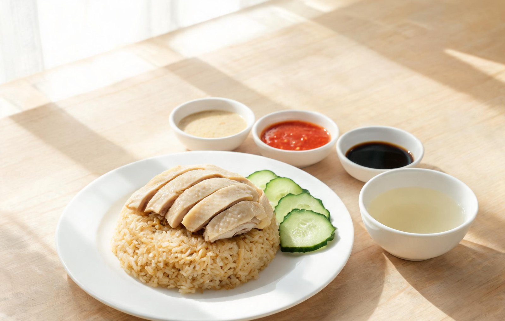
Poached Hainan chicken with rice cooked in chicken stock and a tray of dipping sauces
#9 — Hainan Chicken Rice
Tropical, Poached and Deceptively Simple
Poached gently, cooled in ice and served at room temperature with rice cooked in the chicken stock — chicken rice is the signature of China’s tropical island. It is the same dish travellers meet again in Singapore and Malaysia, and what makes it is the sauce tray: ginger paste, chili sauce, dark soy and a small bowl of clear broth.
Best in Haikou: any market food court, or the old family shops along Bo’ai Road.
How to eat it: try the rice on its own first — it should taste of chicken and garlic, not plain steamed rice.
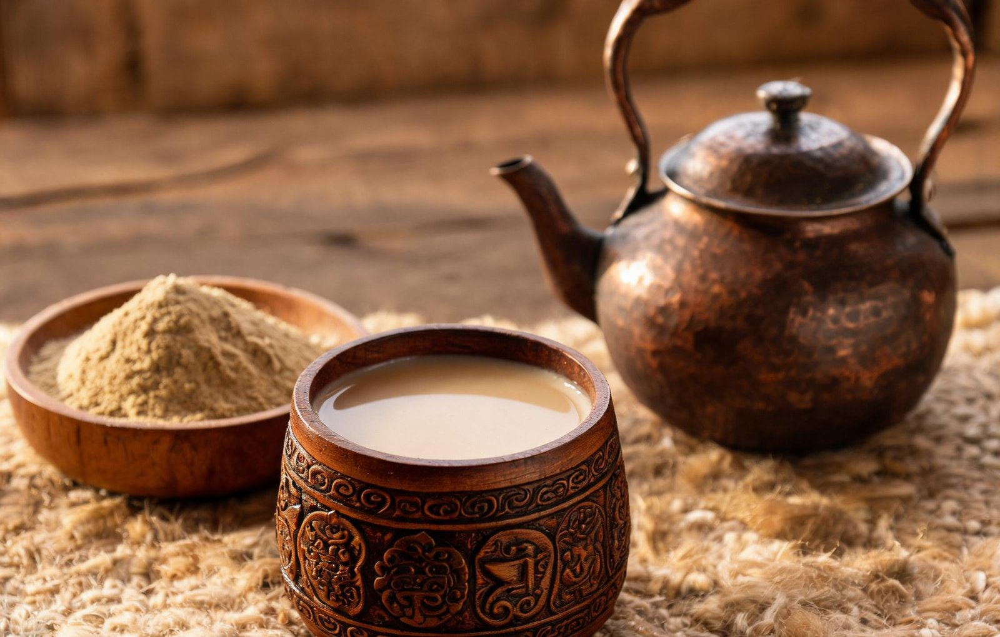
Tibetan butter tea served in a wooden cup on the plateau
#10 — Tibetan Butter Tea
Salty, Buttery and Made for Cold Mornings
Up on the plateau, tea is not a delicate leaf infusion: brick tea is boiled for hours, then churned with yak butter and salt into a thick, savoury, faintly pink drink. It warms you at four thousand metres, and a host will keep refilling your cup all morning. If it is offered to you in a Tibetan home, drink at least a few sips — it is the whole of the welcome.
Where to try it: teahouses and family guesthouses in Lhasa, or on the road up to Everest Base Camp.
Heads up: it is an acquired taste. Sweet tea with milk and sugar is the easier first step.
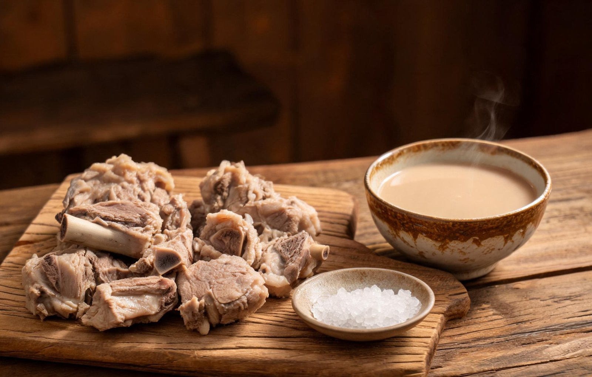
Hand-carved boiled lamb served on the Inner Mongolian grassland
#11 — Inner Mongolian Lamb
Grassland Lamb, Boiled and Carved by Hand
The grasslands of Inner Mongolia raise lamb that tastes of wild herbs rather than of a feedlot. The classic is shouba rou: a whole joint boiled in salted water with almost nothing else, then carved off the bone and eaten by hand with a dip of leek and vinegar. In summer a whole roasted lamb becomes the centre of the party under the yurt lights.
Best in Hohhot: the grassland camps that serve shouba rou and roast lamb at long communal tables.
Also try: Mongolian milk tea and dried milk curd come out first — both are savoury, not sweet.
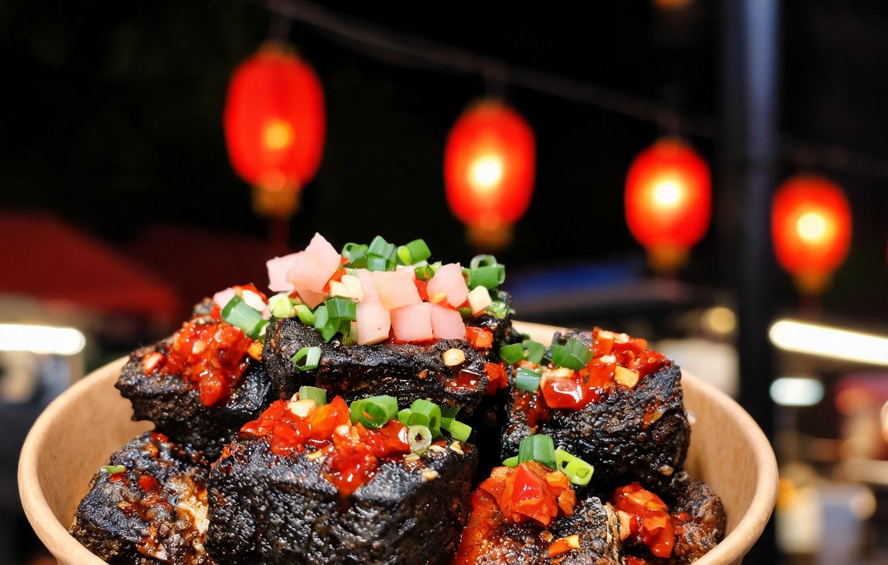
Deep-fried Changsha stinky tofu skewered and served with chili sauce
#12 — Stinky Tofu
The Loudest Smell, the Softest Centre
Fermented bean curd, deep-fried until the crust crackles and served with chili sauce — stinky tofu is China’s most famous acquired taste. The smell is a warning, the taste is mild and savoury, and every region does it its own way: Hunan serves it black and seriously pungent, while the northern version is a golden-brown block with a softer bite.
Best in Changsha: night-market stalls where the tofu is fried to order and eaten with pickled radish.
Take it slowly: order one small portion first. It is cheap, and two bites will tell you everything.
Festival Foods
What China Eats at the Festivals
Almost every Chinese festival has a dish of its own, and the food usually carries a shape, a meaning and a story along with the flavour.
Spring Festival
Jiaozi — New Year Dumplings
On Lunar New Year’s Eve the whole family sits down and folds dumplings by the hundred. The shape echoes an old gold ingot, so eating them is a wish for a rich year — and if one dumpling hides a coin, whoever finds it is the luckiest person at the table.
Lantern Festival
Tangyuan — Sweet Rice Balls
Round, chewy and filled with sesame or peanut paste, tangyuan close the fifteen-day New Year season. The round shape stands for family reunion, which is why they are eaten under the first full moon of the year.
Qingming
Qingtuan — Green Rice Cakes
Around April, sweet mugwort paste turns glutinous-rice cakes a soft jade green. Families buy them on the way to sweep the graves of their ancestors, and the filling now ranges from red bean paste to salted egg yolk.
Dragon Boat Festival
Zongzi — Leaf-Wrapped Rice
Sticky rice with pork or dates, wrapped in bamboo leaves and boiled for hours. The story behind them is Qu Yuan, the poet who drowned himself in 278 BC; villagers threw rice into the river so the fish would leave his body alone.
Mid-Autumn Festival
Mooncakes
A dense pastry of lotus-seed paste and salted egg yolk, stamped with a pattern and shared under the fullest moon of the year. Boxes of them are given as gifts for weeks beforehand, and the round yolk at the centre stands for the moon itself.
Laba Festival
Laba Congee
The first festival of the lunar year’s last month: eight kinds of grain, beans and dried fruit simmered into a sweet porridge. Temples hand it out free, and one bowl means the countdown to New Year has officially begun.
Food Culture
The Great North–South Food Wars
Ask ten Chinese people a single food question and you may start an argument. These are the debates that fill comment sections every holiday.
Sweet or Savoury Tofu Pudding
North
Served warm and savoury, with soy sauce, pickled vegetables, dried shrimp, chili oil and a scatter of spring onion. For a northerner, a sweet version is simply not douhua at all.
VS
South
Served cool and sweet, dressed with syrup, brown sugar or red beans and sometimes ginger. In the south douhua is a dessert, and salt has no business being anywhere near it.
Sweet or Savoury Zongzi
North
Small pyramids of rice with red dates or red bean paste, eaten with a dip of white sugar. In the north, zongzi are a sweet snack rather than a meal.
VS
South
A meal wrapped in a leaf: pork belly, salted egg yolk, mushroom and chestnut packed around the rice. The Guangdong and Jiaxing versions are the ones people argue about.
Sesame Paste or Oil for Hotpot
North
A thick bowl of sesame paste and fermented bean curd, sometimes with garlic and coriander. Northerners say the sauce should be part of the bite, not just a dip.
VS
South
A small dish of sesame oil, garlic, chopped chili and soy, so the sauce sharpens the flavour instead of hiding the meat. In Sichuan the chili never stops.
Noodles or Rice
North
Wheat country: noodles, dumplings and steamed buns are the backbone of every meal, and a bowl of rice is a side dish at best.
VS
South
Rice country: a meal is not a meal without rice on the table, and noodles are something you eat for breakfast, not for dinner.
One Cabbage or One Carrot
North
A northern shopper in late autumn buys a year of vegetables at once — a hundred kilos of cabbage stacked in the stairwell, waiting to be pickled for winter.
VS
South
A southern shopper buys one carrot, one tomato and two eggs, and the stallholder peels and chops them on request. This is the meme that never dies.
Survival Guide
Eating in China Like a Pro
You don't need chopsticks skills or a phrasebook to eat well. Just know these basics.
🥢 Chopsticks 101
Rest them on the table or a chopstick rest — never upright in a bowl of rice (that's a funeral ritual). Don't point them at people. And if you can't use them, ask for a fork: "qing gei wo yige chazi".
🍽 Ordering for Groups
Chinese eating is communal. Order 1–2 dishes per person, shared family-style. Add one zhucai (main meat dish), one vegetable, one soup. Rice is usually extra.
🌶 辣 vs. 不辣
Là = spicy, bù là = not spicy. Sichuan and Hunan will test you. If you want less fire, try shao là (a little spicy).
📱 Scan to Pay
Most restaurants accept WeChat Pay / Alipay via QR code. But international cards often don't link up. Keep cash or exchange yuan at a bank before you go out.
🚿 The Toilet Situation
Most mid-range+ restaurants have Western toilets. Street food stalls generally don't. Carry tissues and hand sanitizer — you'll be glad you did.
🧾 No Tipping
Tipping is not expected in China — in fact, it can be confusing. Just pay the bill and go. Service charge is already included at nicer places.
📱 Food Apps to Know
Dianping, Meituan and Xiaohongshu are the local guides — reviews, photos and menus in one app. English text is limited, so translate a dish name or show a photo to order.
🛵 Delivery Apps (Waimai)
Meituan, Shangou and JD.com bring takeout right to your hotel door. Set the address in Chinese, pay by WeChat or Alipay, and expect a 30-minute wait — the courier will call or text on arrival.
📷 Ordering by QR Code
Most restaurants print a QR code on the table. Scan it with WeChat or Alipay to see the menu, order and pay without saying a word — a photo of the dish you want is usually enough.
Bon appétit — and don't be afraid of the weird stuff.
Century eggs, stinky tofu, fish heads. What sounds strange to you is someone's grandmother's recipe.